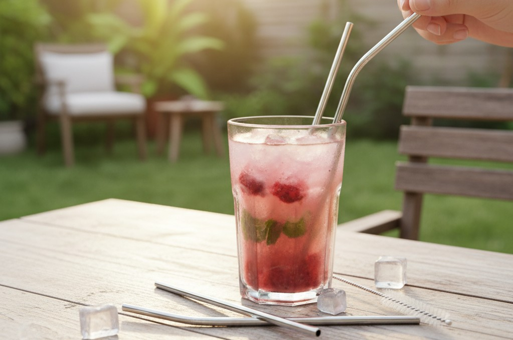

Bombillas de Acero
Reutilizables y duraderas, para todas tus bebidas

Alternativa Sostenible para tus Bebidas
Nuestras bombillas de acero inoxidable son la alternativa perfecta a las bombillas desechables de plástico. Fabricadas con acero inoxidable de grado alimenticio 304, son duraderas, seguras y fáciles de limpiar, ideales para disfrutar de tus bebidas favoritas mientras cuidas el planeta.
Características técnicas
- Material: Acero inoxidable 304 grado alimenticio
- Acabado: Pulido espejo, sin bordes ásperos
- Resistencia: A la corrosión y altas temperaturas
- Diseño: Ergonómico y fácil de limpiar
- Incluye: Cepillo de limpieza especializado
Modelos disponibles
- Clásica (20cm): Para bebidas en general
- Mate (15cm): Específica para mate
- Smoothie (12cm): Extra ancha para bebidas espesas
- Set familiar: Combinación de modelos con estuche
Beneficios principales
- Durabilidad extrema (años de uso)
- No altera el sabor de las bebidas
- Apta para bebidas frías y calientes
- Fácil limpieza y mantenimiento
- 100% reciclable al final de su vida útil
Guía de cuidados
- Lavar antes del primer uso
- Enjuagar después de cada uso
- Usar el cepillo incluido para limpieza profunda
- Apto para lavavajillas
- Secar completamente antes de guardar
Impacto ambiental
Una sola bombilla de acero puede reemplazar cientos de bombillas de plástico desechables, reduciendo significativamente los residuos plásticos que terminan en nuestros océanos y vertederos.
¿Buscás otros productos sustentables? Ver catálogo completo →